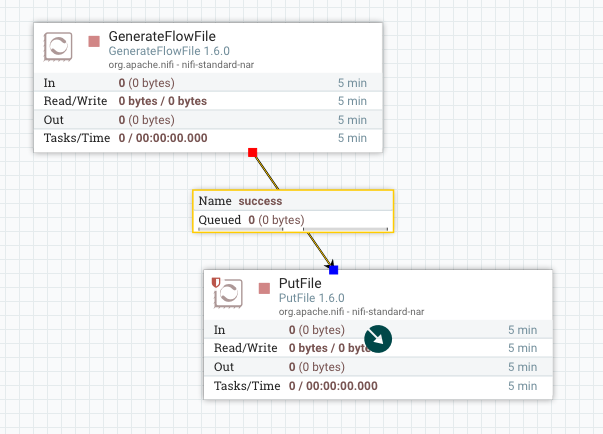
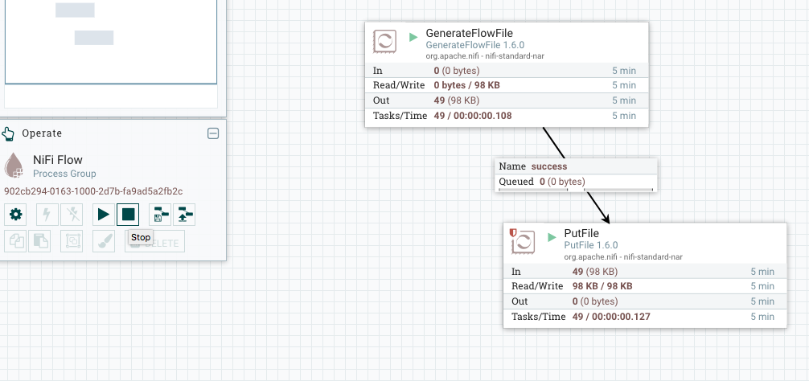

Introduction
Recently I had work to produce a document with a comparison between two tools for Cloud Data Flow. I didn’t have any knowledge of this kind of technology before creating this document. Apache NiFi is one of the tools in my comparison document. So, here I describe some of my procedures to learn about it and take my own preliminary conclusions. I followed many steps on my own desktop (a MacBook Pro computer) to accomplish this task. This document shows you what I did.
Basically, to learn about Apache NiFi in order to do a comparison with other tool:
-
I saw some videos about it.
-
I wrote my own labs:
-
Building a simple Data Flow (under contruction)
-
Developing a custom processor (under contruction)
-
Deploying Apache NiFi under Pivotal Cloud Foundry (under contruction)
About this document
This document was written using Vim (my favorite text editor) and its source code is in AsciiDoc format. The generated output formats (HTML and PDF) are build (and published in GitHub Pages) with Gradle. Read more about the generation processes of this document in README.adoc.
Download the PDF version of this document.
About me
You can read more about me on my cv.
Videos with a technical background
Prior to starting my own labs, I saw some introductory videos (available on YouTube):
Lab 1: Running Apache NiFi inside a Docker container
For me, the best way to start learning a new technology is by running all the stuff related to them inside a Docker container. By this way, I can abstract myself about the related installation procedures and go directly to the point.
So, In this tutorial, I present the steps to work with Apache NiFi using Docker.
Prerequisites
-
Docker installed.
Start/Restart
First start:
docker run --name nifi -p 9090:9090 -d -e NIFI_WEB_HTTP_PORT='9090' apache/nifi:latest
Restart (if was started any time before with the command below and stopped):
docker start nifi
Access to the UI
Status
$ docker ps
CONTAINER ID IMAGE COMMAND CREATED STATUS PORTS NAMES
3a506cfec5ab apache/nifi:latest "/bin/sh -c ${NIFI_B…" 10 hours ago Up 10 hours 8080/tcp, 8443/tcp, 10000/tcp, 0.0.0.0:9090->9090/tcp nifi
Stop
docker stop nifi
$ docker ps -a
CONTAINER ID IMAGE COMMAND CREATED STATUS PORTS NAMES
3a506cfec5ab apache/nifi:latest "/bin/sh -c ${NIFI_B…" 10 hours ago Exited (137) 33 seconds ago nifi
Lab 2: Running Apache NiFi locally
Prerequisites
-
Java installed.
Installation
$ brew install nifi .... ######################################################################## 100.0% üç∫ /usr/local/Cellar/nifi/1.6.0: 386 files, 1.2GB, built in 45 minutes 44 seconds
Start
$ nifi
Usage nifi {start|stop|run|restart|status|dump|install}
$ nifi start Java home: /Users/pj/.sdkman/candidates/java/current NiFi home: /usr/local/Cellar/nifi/1.6.0/libexec Bootstrap Config File: /usr/local/Cellar/nifi/1.6.0/libexec/conf/bootstrap.conf
Access to the UI
Status
$ nifi status Java home: /Users/pj/.sdkman/candidates/java/current NiFi home: /usr/local/Cellar/nifi/1.6.0/libexec Bootstrap Config File: /usr/local/Cellar/nifi/1.6.0/libexec/conf/bootstrap.conf 2018-04-29 08:02:13,153 INFO [main] org.apache.nifi.bootstrap.Command Apache NiFi is currently running, listening to Bootstrap on port 58129, PID=4024
Stop
$ nifi stop Java home: /Users/pj/.sdkman/candidates/java/current NiFi home: /usr/local/Cellar/nifi/1.6.0/libexec Bootstrap Config File: /usr/local/Cellar/nifi/1.6.0/libexec/conf/bootstrap.conf 2018-04-29 08:11:41,562 INFO [main] org.apache.nifi.bootstrap.Command Apache NiFi has accepted the Shutdown Command and is shutting down now 2018-04-29 08:11:41,587 INFO [main] org.apache.nifi.bootstrap.Command Waiting for Apache NiFi to finish shutting down... 2018-04-29 08:11:43,597 INFO [main] org.apache.nifi.bootstrap.Command NiFi has finished shutting down.
Lab 3: Building a simple Data Flow
Prerequisites
-
Docker installed.
Step 1 - Create a Nifi docker container with default parameters
$ docker run --name nifi -p 8080:8080 -d apache/nifi
Step 2 - Access the UI and create two processors
Step 3 - Add and configure processor 1 (GenerateFlowFile)
Drag and drop a processor into canvas:
Search for a processor named GenerateFlowFile:
Click on Add and the processor will be added to the canvas:
Configure the processor (2 steps):
Step 1 - Adjust the Run Schedule to 5 sec:
Step 2 - Adjust the propertie File Size to 2KB:

Step 4 - Add and configure processor 2 (Putfile)
Drag another processor into canvas. Search for PutFile:
Add it to the canvas:
Configure the Directory property to /tmp/nifi.
Configure Automatically Terminate RelationShips by checking the boxes failure and success.
Step 5 - Connect the processors
From GenerateFile to Putfile:
A connection will be create:
This will be the final state:

Step 6 - Start the processors
Click Ctrl to select both processors and start it.
Step 7 - View the generated logs
Open a shell inside the container:
$ docker exec -it nifi /bin/bash
Type the following command to see a list of the 9 generated files. This list will be actualized second by second. As we configure in NiFi, a new file will be generated on every 5 seconds.
$ while :; do clear; ls -lht /tmp/nifi/ | head -10; sleep 1; done
Step 8 - Stop the processors
Click Ctrl to select both processors and stop it.

Step 9 - Stop and destroy the docker container
$ docker stop nifi $ docker rm nifi
Conclusions
-
NiFi UI is very simple and intuitive.
-
The properties are well documented.
-
Many other aspects of the UI can be explored in this playlist.
All references
- Apache NiFi
-
- GitHub
- Documentation
- Other
-
- YouTube videos
- GitHub
- Community Forums/Meetups
- Stack Overflow
- Books
- Articles/ examples
-
-
Getting Started
-
Developing custom processors
-
Automation/ Deployment
-
Best Practices/ Use cases
-
Architecture
-
Events/ Meetups
-
Spring with Apache NiFi:
-
Pivotal Cloud Foundry integration:
-
Comparison with other tools:
-